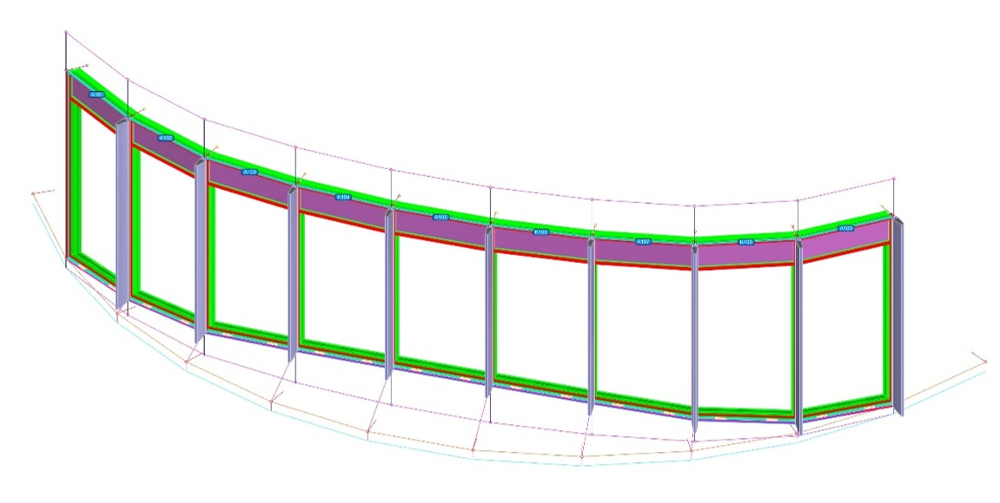
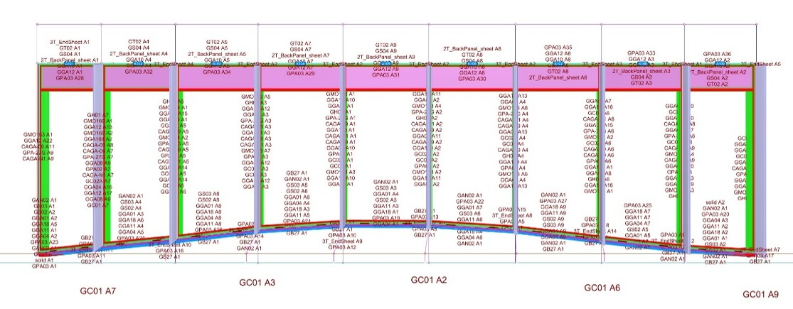
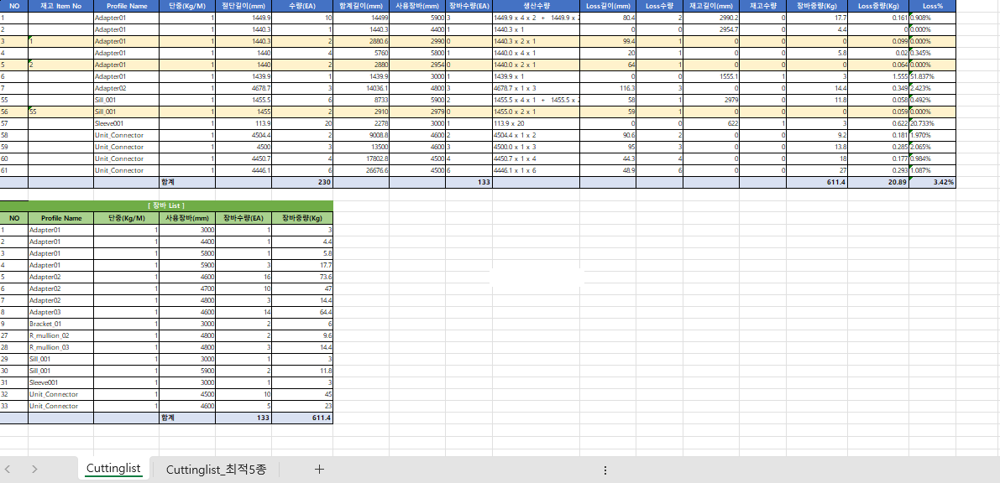
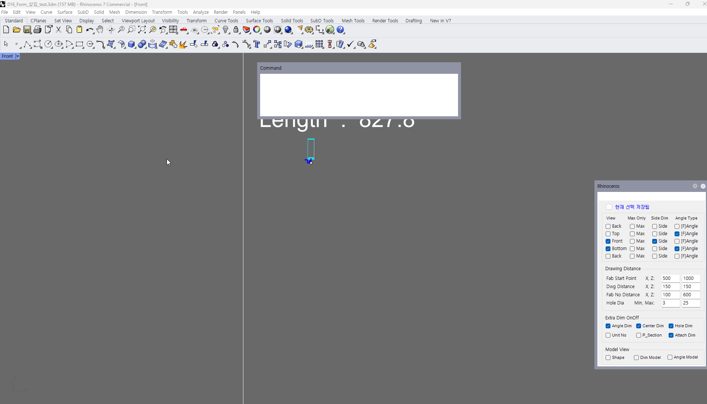
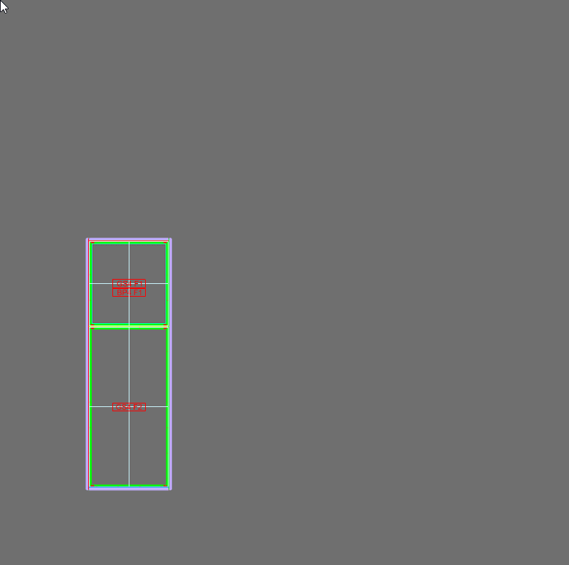
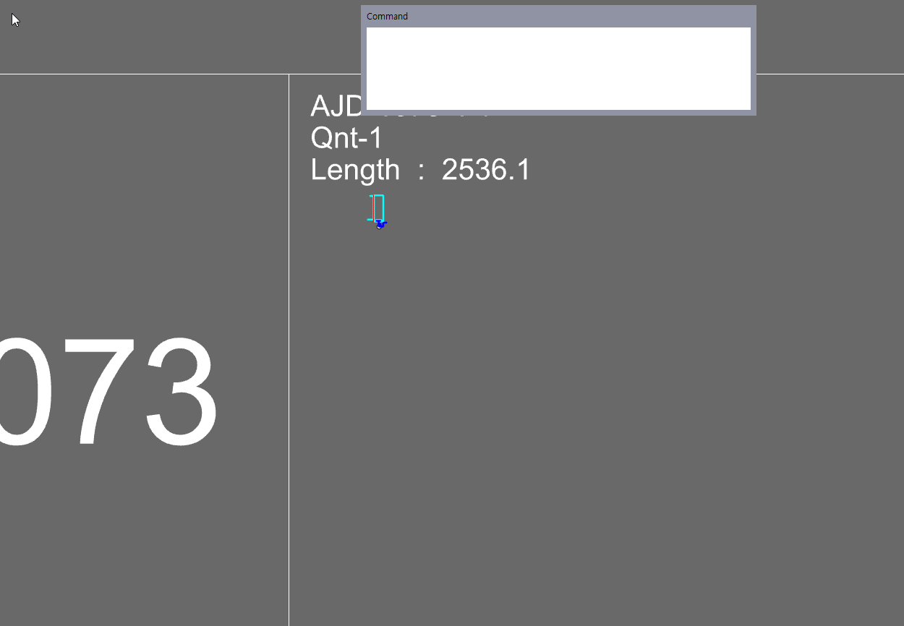

01
3D 모델링의 공포를 없앱니다
모든 객체를 범용 3D 명령으로 하나씩 만드는 대신, 커튼월 단면과 와이어프레임이라는 익숙한 논리를 사용합니다.
RCW V5는 커튼월 단면과 와이어프레임을 실제 제작용 모델로 바꾸고, 그 모델로 공장이 필요로 하는 가공도와 부품 리스트를 만듭니다.
RCW V5는 설계 의도와 제작 사이를 잇는 Rhino 플러그인입니다. Rhino 가 설치되어 있어야 작동합니다.
RCW가 푸는 문제
커튼월 실무자는 일반적인 3D 모델링이 얼마나 많은 시간과 전문적인 노력을 요구하는지 압니다. 모델을 만드는 데 손으로 그리는 것보다 오래 걸린다면 작업 방식을 바꿀 이유가 없습니다. RCW는 모델을 실용적으로 만드는 것에서 시작합니다.
모든 객체를 범용 3D 명령으로 하나씩 만드는 대신, 커튼월 단면과 와이어프레임이라는 익숙한 논리를 사용합니다.
모델이 만들어지면, 같은 판단을 도면마다 반복하는 대신 그 모델에서 제작 정보를 생성하고 검토합니다.
대형 프로젝트는 수개월의 신중한 도면 작업을 요구합니다. 눈에 보이는 모델과 연결된 산출물은 잘못된 부재가 공장이나 현장에 도착하기 전에 문제를 잡아냅니다.
RCW를 선택하는 세 가지 이유
RCW는 범용 시각화 도구가 아닙니다. 그 가치는 세 가지 결과로 측정됩니다. 매일의 커튼월 설계에 충분히 빠른 모델, 사람이 직접 세지 않아도 되는 부재 정보, 그리고 그대로 발행할 만큼 믿을 수 있는 제작 산출물입니다.
RCW는 커튼월 설계자가 이미 가진 정보 — 단면, 프로파일, 와이어프레임 — 에서 시작합니다. 그 정보를 정돈된 Unit과 구성요소로 이끌어, 모델이 또 하나의 관리 대상이 아니라 실제 작업 도구가 되게 합니다.

부재를 하나씩 확인하고 옮겨 적는 과정에서 누락이 생깁니다. RCW는 모델 전체의 형상을 읽어 부재를 구분하고 제작 번호를 부여합니다. 눈에 잘 띄지 않는 Anchor block까지 같은 기준으로 잡히고, 그 결과가 그대로 발주와 공장 작업에 쓰이는 리스트로 이어집니다.




가공도는 단순한 출력물이 아닙니다. 대형 프로젝트에서는 숙련된 인력과 신중한 검토, 그리고 많은 시간이 필요합니다. RCW는 형상을 모델에서 가져오고, FDStyle이 프로파일별로 검증된 도면 구성을 기록해 반복 작업이 같은 표준을 따르게 합니다.

가공도가 생성된 뒤에도 같은 모델이 Unit 2D, 입면 정보, 부품 리스트를 뒷받침합니다. 그 결과 공장은 무엇을 만들지 더 명확히 알고, 프로젝트 팀은 추적 가능한 검토 기준을 갖게 됩니다.

모델에서 산출물까지
RCW는 설계자가 필요로 하는 순서 그대로 작업을 유지합니다. 빠르게 모델링하고, 명확히 확인한 뒤, 제작 정보를 발행합니다.
파사드를 정의하는 단면과 와이어프레임에서 시작합니다.
익숙한 설계 정보를 Rhino 안에서 정돈된 구성요소로 바꿉니다.
눈에 보이는 모델로 부재와 관계를 산출 전에 확인합니다.
검증된 도면 규칙을 적용해 제작 정보를 만듭니다.
같은 모델에서 Unit 정보와 부품 리스트를 준비합니다.
결과물
모델은 공장이 실제로 쓸 수 있는 결과 — 명확한 Unit 정보, 가공도, 조립을 완성하는 부품 리스트 — 를 만들어낼 때 비로소 제 값을 합니다.

선택한 Solid Unit에 대해 단면 산출과 Fablist 정보를 함께 만듭니다.

가공도에 수집된 부속 데이터로 조립을 완성하는 부품과 수량을 보여줍니다.
버전 비교
Core는 프레임·유리·백패널의 전체 흐름 — 모델링·번호·리스트·가공도·2D·NC — 을 모두 담습니다. Standard는 여기에 창호·그릴·BIM 데이터를 더합니다. Professional은 비직교·자유곡면 파사드를 위한 트랜섬 곡선 모델링과, 회사의 작업 방식에 맞춘 기능 개발을 더합니다.
| 기능 | Core프레임·유리·백패널 | Standard전체 명령 세트 | Professional곡면 형상 · 맞춤 개발 |
|---|---|---|---|
| 모델링 | |||
| 와이어프레임·단면 정의 | ✓ | ✓ | ✓ |
| 프레임(멀리언·트랜섬) 유닛 모델링 — UMD | ✓ | ✓ | ✓ |
| 유리 모델링·번호·리스트 | ✓ | ✓ | ✓ |
| 백패널(BackPanel) 모델링 | ✓ | ✓ | ✓ |
| 창호(Vent) 모델링 | — | ✓ | ✓ |
| 그릴(Grill) 모델링 | — | ✓ | ✓ |
| 트랜섬 곡선(커브드) 모델링 | — | — | ✓ |
| 도면 · 물량 | |||
| 프로파일 자동 번호 — FabNo · GsNo | ✓ | ✓ | ✓ |
| 가공도 — FDwg · FDDS · FDstyle | ✓ | ✓ | ✓ |
| 부재·부속 표 — FabTable · FabBomTable | ✓ | ✓ | ✓ |
| 컷팅리스트·물량 — Cuttinglist · Molist | ✓ | ✓ | ✓ |
| 2D 산출 — F2d · S2d · U2D · Fablist | ✓ | ✓ | ✓ |
| NC 데이터 — NC3~NC6 | ✓ | ✓ | ✓ |
| 사용자 바리스트 — UBarList | — | ✓ | ✓ |
| BIM 데이터 — FLOpt · FLdata | — | ✓ | ✓ |
| 도구 · 환경 | |||
| 레이어·블록·텍스트·치수 유틸리티 | ✓ | ✓ | ✓ |
| 웹뷰어 — WebV · ToWebFile | ✓ | ✓ | ✓ |
| 서피스·DotText·각도·실린더 도구 | — | ✓ | ✓ |
| 사용자 요구 맞춤 개발(Customization) | — | — | ✓ |
| Rhino 7 · Rhino 8 | ✓ | ✓ | ✓ |
| 라이선스 | 영구 | 영구 | 영구 |
| 트라이얼 | 90일 | 30일 · Standard 전체 범위 | — |
파사드에 비직교·자유곡면 트랜섬 곡선 형상이 포함된다면, 또는 회사의 작업 방식에 맞춘 기능이 필요하다면 Professional을 선택하세요.
Professional 문의RCW V5는 접근하기 쉬운 커튼월 모델링 흐름을, 팀이 자신 있게 발행할 수 있는 정확한 가공도·부품 정보와 연결합니다.